# Noise and Probablistic target
上節課推導 VC Dimension 的資料集是在沒有 Noise 的情況下，
本節課討論如果資料集本身存在 Noise ，那 VC Dimension 的推導是否還成立呢？
首先， Data Sets 的 Noise 一般有三種情況：
- 由於人為因素，正類被誤分為負類，或者負類被誤分為正類；
- 同樣特徵的樣本被模型分為不同的類；
- 樣本的特徵被錯誤記錄和使用。
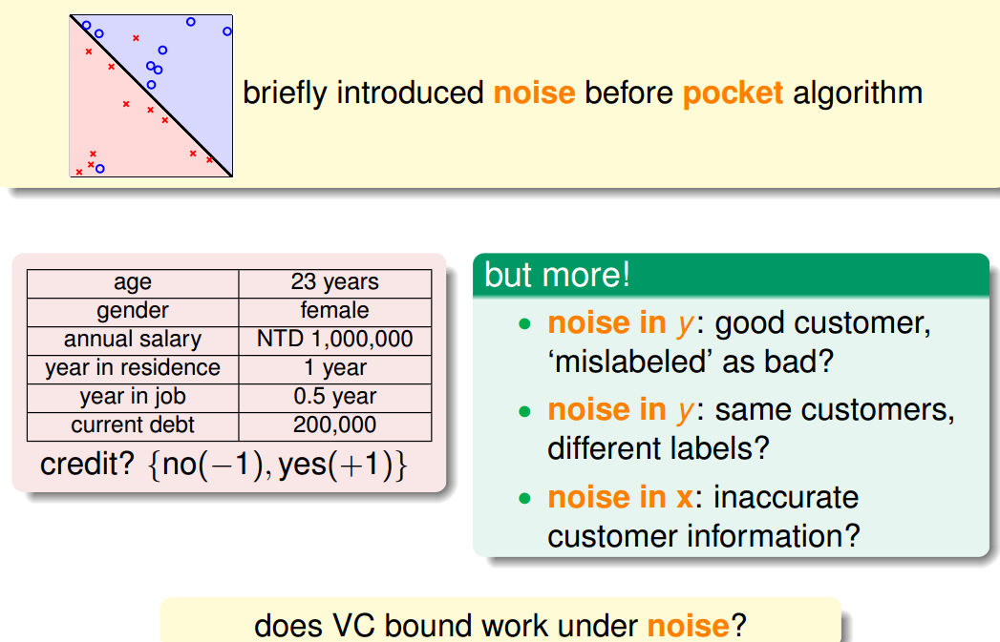
之前的資料集是確定的，即沒有 Noise 的，我們稱之為 Deterministic 。現在有 Noise 了，也就是說在某點處不再是確定分佈，而是概率分佈了，即對每個 (x,y) 出現的概率是。
因為 Noise 的存在，比如在 x 點，有 0.7 的概率 y=1，有 0.3 的概率 y=0，即 y 是按照 分佈的。數學上可以證明如果資料集按照 概率分佈且是獨立同分布 ( iid ) 的，那麼以前證明機器可以學習的方法依然奏效， VC Dimension 有限即可推斷 和 是近似的。
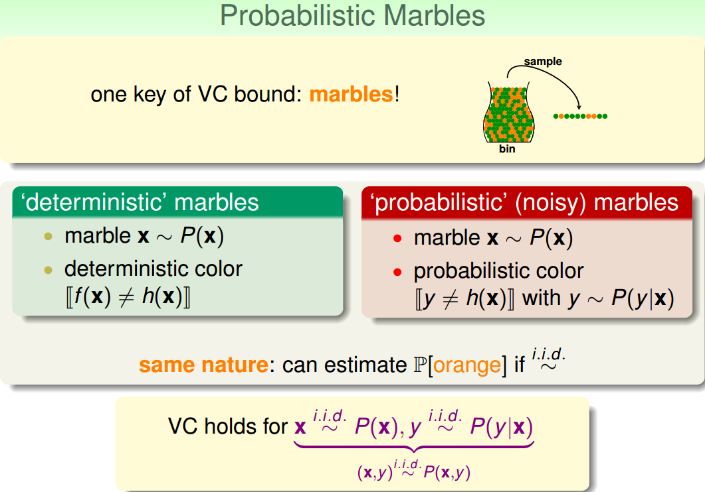
稱之為目標分佈（ Target Distribution ）。它實際上告訴我們最好的選擇是什麼，同時伴隨著多少 noise。其實，沒有 noise 的資料仍然可以看成特殊的 概率分佈，即概率僅是 1 和 0 對於以前確定的資料集：
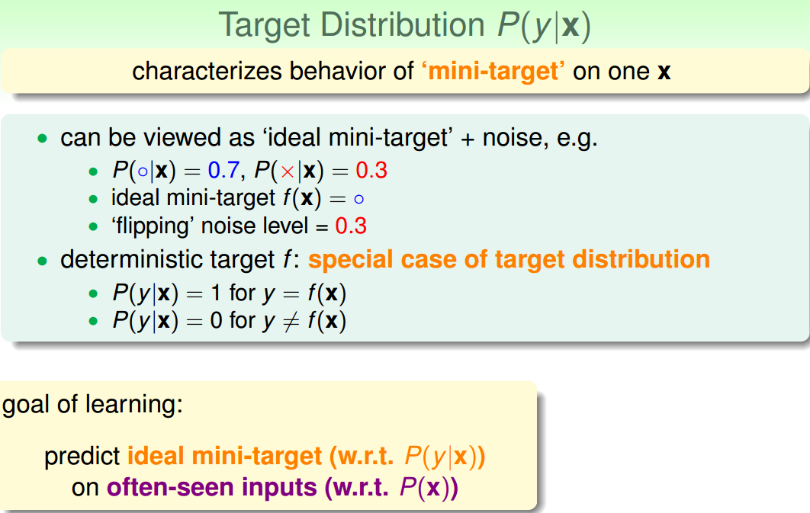
在引入 noise 的情況下，新的學習流程圖如下所示：
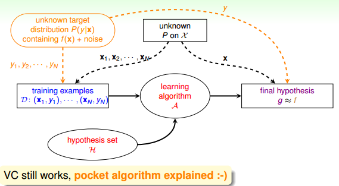
# ERROR Measure
機器學習需要考慮的問題是找出的矩 g 與目標函數 f 有多相近，我們一直使用 進行誤差的估計，那一般的錯誤測量有哪些形式呢？
我們介紹的矩 g 對錯誤的衡量有三個特性：
out-of-sample：樣本外的未知數據pointwise：對每個數據點 x 進行測試classification：看 prediction 與 target 是否一致classification error通常稱為 0/1 error
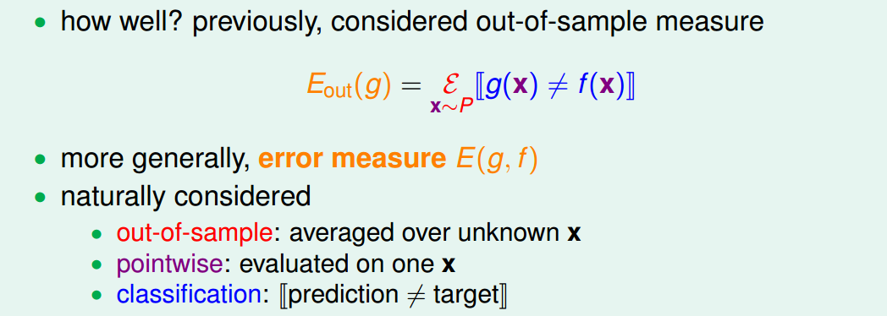
PointWise error 實際上就是對資料集的每個點計算錯誤並計算平均， 和 的 pointwise error 的運算式為：
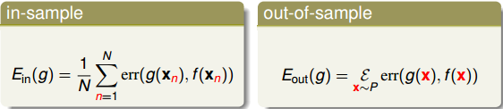
pointwise error 是機器學習中最常用也是最簡單的一種錯誤衡量方式，未來課程中，我們主要考慮這種方式。 pointwise error 一般可以分成兩類： 0/1 error 和 squared error 。
0/1 error通常用在分類（classification）問題上，squared error通常用在回歸（regression）問題上。

Ideal Mini-Target 由 和 err 共同決定， 0/1 error 和 squared error 的 Ideal Mini-Target 計算方法不一樣。例如下面這個例子，分別用 0/1 error 和 squared error 來估計最理想的 mini-target 是多少。 0/1 error 中的 mini-target 是取 最大的那個類，而 squared error 中的 mini-target 是取所有類的加權平方和。
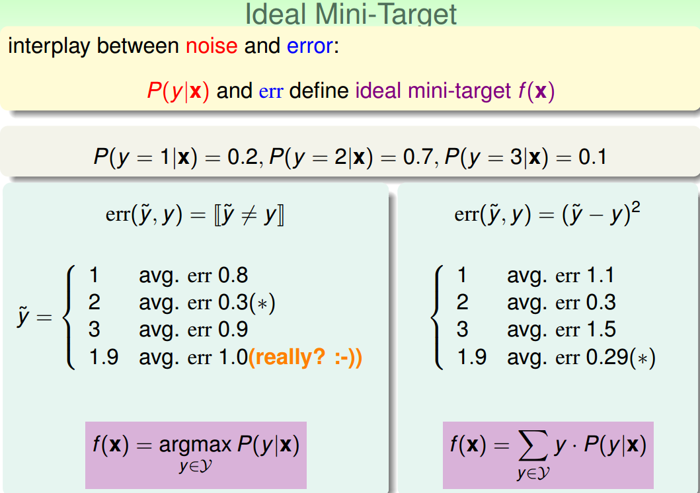
有了錯誤衡量，就會知道當前的矩 g 是好還是不好，並會讓演算法不斷修正，得到更好的矩 g，從而使得 g 與目標函數更接近。所以，引入 error measure 後，學習流程圖如下所示：
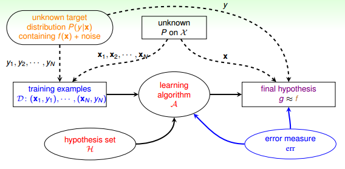
# Algorithmic Error Measure
Error 有兩種： false accept 和 false reject 。
false accept 意思是誤把負類當成正類， false reject 是誤把正類當成負類。 根據不同的機器學習問題， false accept 和 false reject 應該有不同的權重，這根實際情況是符合的，比如是超市優惠，那麼 false reject 應該設的大一些；如果是安保系統，那麼 false accept 應該設的大一些。
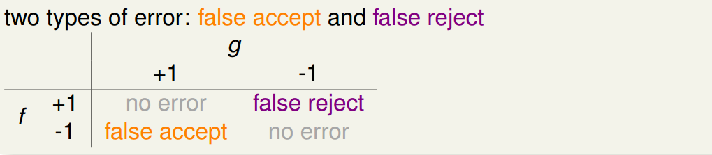
機器學習演算法 A 的 cost function error 估計有多種方法，真實的 err 一般難以計算，常用的方法可以採用 plausible 或者 friendly ，根據具體情況而定。
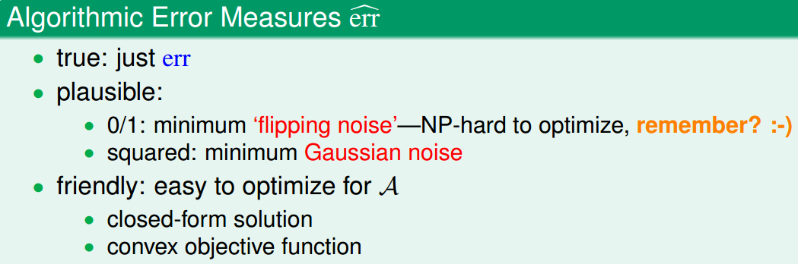
引入 algorithm error measure 之後，學習流程圖如下：

# Weighted Classification
實際上，機器學習的 Cost Function 即來自於這些 error ，也就是演算法裡面的反覆運算的目標函數，通過優化使得 Error （）不斷變小。cost function 中， false accept 和 false reject 賦予不同的權重，在演算法中體現。對不同權重的錯誤懲罰，可以選用 virtual copying 的方法。
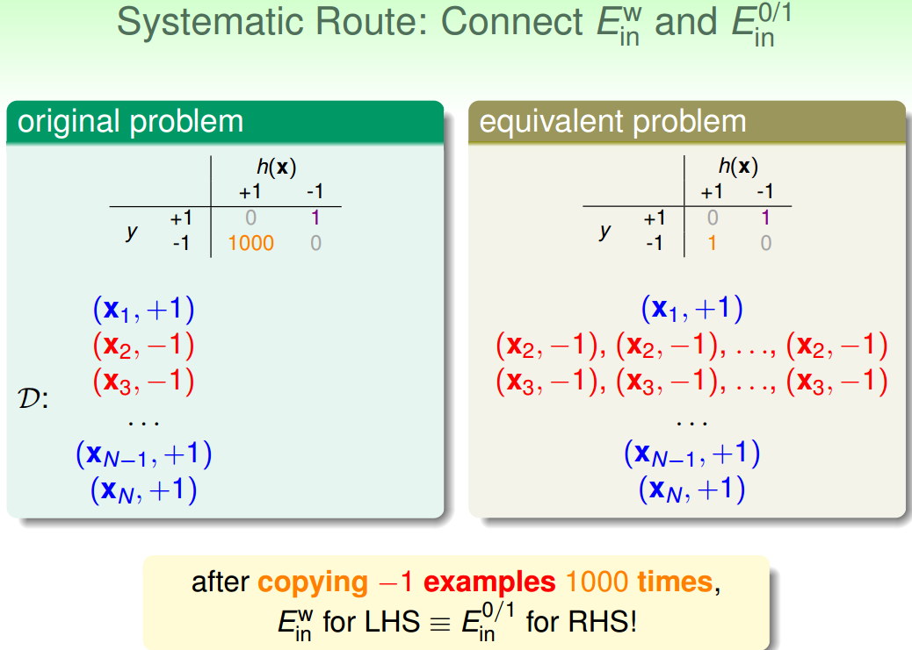
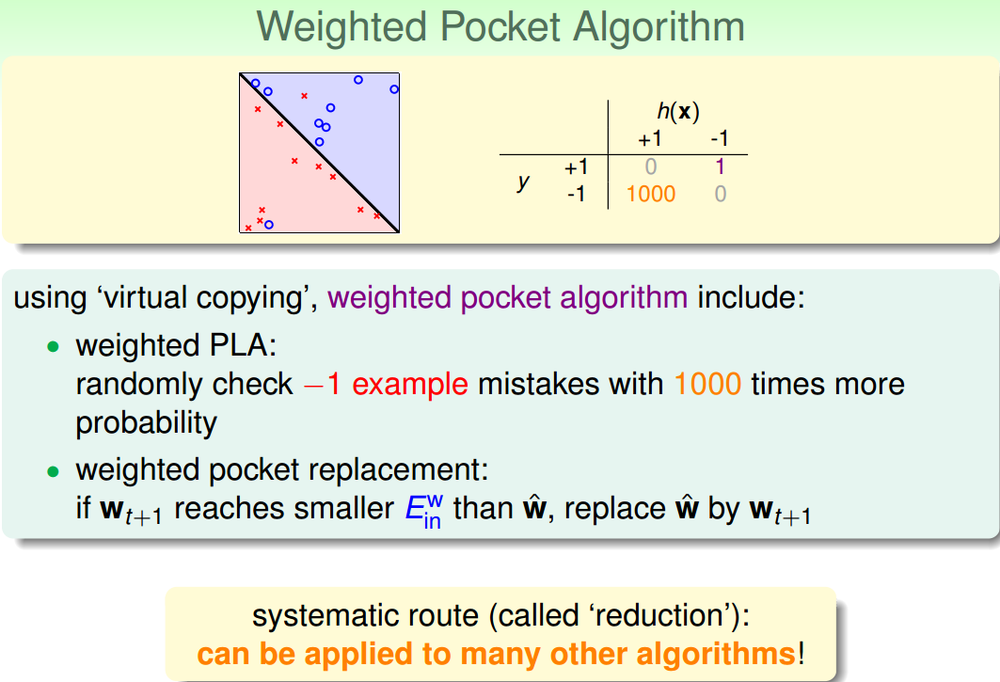
# Conclusion
本節課主要講了在有 Noise 的情況下，即資料集按照 概率分佈，那麼 VC Dimension 仍然成立，機器學習演算法推導仍然有效。機器學習 cost function 常用的 Error 有 0/1 error 和 squared error 兩類。實際問題中，對 false accept 和 false reject 應該選擇不同的權重。